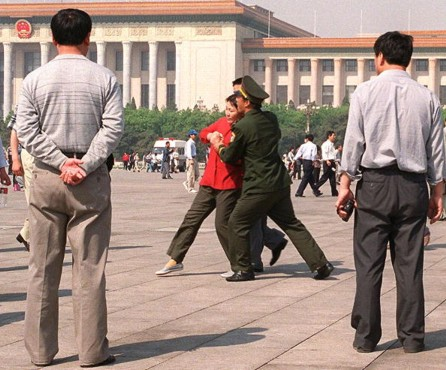

Tài liệu gốc: http://dajiyuan.com/gb/4/12/4/n737542.htm
|
 |
Đã hơn một thế kỷ, phong trào Cộng Sản hung bạo chỉ giáng xuống loài người chiến tranh, nghèo khổ, sự bạo tàn và độc tài chuyên chế. Với sự sụp đổ của Liên Xô và hệ thống Đảng Cộng Sản Đông Âu, tai họa này và vở kịch điên rồ rốt cùng bước vào giai đoạn cuối của cuối thế kỷ. Không một ai, từ thường dân đến Tổng bí thư Đảng, còn tin vào thần thoại của Chủ nghĩa Cộng sản nữa.
Chế độ Cộng sản Trung quốc ra đời không phải bằng một “sự ủy thác siêu phàm” nào cũng không phải dân cử. Hôm nay, với lý tưởng ấy bị hủy diệt, sự hợp pháp của sự thống trị này đang đối diện một thử thách chưa từng có trong lịch sử.
ĐCSTQ không đành lòng từ bỏ giai đoạn lịch sử này để thuận theo chu kỳ lịch sử loài người. Thay vào đó, nó sử dụng những phương cách độc ác đã được hình thành trong những thập niên của các phong trào chính trị để tân trang sự tìm tòi hợp pháp và cố gắng nổ lực để phục hồi sự ủy trị đã chết của nó.
Kế hoạch cải cách và mở cửa của ĐCSTQ là ngụy trang để bám lấy luật lệ Đảng trị của nó. Những thành tích kinh tế có được bởi sự dốc sức của người dân Trung quốc trong hơn 20 năm qua đã không thuyết phục được ĐCSTQ bỏ con dao khát máu xuống. Thay vào đó, ĐCSTQ đã phỏng tay trên các thành tích này để giữ vững sự thống trị, để khỏa lấp và để tán dương hành động côn đồ vô đạo đức của nó. Điều hãi hùng nhất là ĐCSTQ đang nỗ lực hủy diệt nền đạo đức của cả toàn quốc, cố tình biến mỗi một công dân Trung quốc trong mọi tầng lớp trở thành kẻ côn đồ vô đạo đức hầu để tạo nên một môi trường có lợi cho ĐCSTQ “thăng tiến với thời gian”.
Vào thời điểm lịch sử hôm nay, nó đặc biệt quan trọng cho chúng ta hiểu tường tận tại sao ĐCSTQ hành động giống như những côn đồ và cho chúng ta nhận diện được bản tính tội lỗi của nó, có như vậy toàn thể người dân Trung quốc mới có thể đạt được sự bền vững lâu dài, sớm bước vào một kỷ nguyên hoàn toàn mất hết ĐCSTQ, và xây dựng một tương lai của một đất nước mới sáng lạng.
******************
Trong quá trình lịch sử, ĐCSTQ đã vẽ ra những viễn tưởng cải tiến mỗi khi gặp phải khủng hoảng, nguy kịch hầu để cám dỗ người dân hình thành ảo tưởng về ĐCSTQ. Không ngoại lệ, ảo tưởng tan vỡ nhiều lần. Hôm nay, ĐCSTQ đang săn lùng lợi ích ngắn hạn hầu để sản xuất cái màn kinh tế thịnh vượng để một lần nữa khuyến khích người dân tin vào ảo tưởng của nó. Tuy nhiên, sự xung đột chủ yếu giữa quyền lợi Đảng, đất nước và người dân đã chứng minh rằng sự thịnh vượng hảo huyền này sẽ không trụ nữa. “Sự cải cách” mà ĐCSTQ đã hứa hẹn chỉ có một nguyên do: duy trì sự thống trị. Thâṭ là một cải cách yếu hèn, một thay đổi trên bề mặt chứ không phải hiện vật. Một đại khủng hoảng xã hội đang nằm dưới một khuếch trương giả tạo. Một khi khủng hoảng bùng nổ, đất nước và dân tộc sẽ một lần nữa gặp khổ nạn.Với sự thay đổi nhà cầm quyền, thế hệ mới của các lãnh tụ của ĐCSTQ không có phần trong cuộc cách mạng Cộng sản, bởi thế sẽ có ít uy tín trong việc củng cố đất nước. Giữa tình trạng hợp pháp hoá, quyền lợi Đảng dưới sự bảo vệ của ĐCSTQ đã trở thành một bảo đảm cơ bản mạnh mẽ duy trì quyền lợi của những nhân vật điển hình trong nội bộ ĐCSTQ. Bản tính của ĐCSTQ là ích kỷ vô hạn, tân trang đất nước một cách hòa bình mà hy vọng vào sự cống hiến cho đất nước của một đảng như thế chỉ là mơ tưởng hảo huyền.
Chúng ta hãy nhìn vào Tờ báo Nhân dân, cái loa của ĐCSTQ, đã nói trên trang đầu vào ngày 12-7-2004: “Những phép biện chứng lịch sử đã hằng luyện cho thành viên ĐCSTQ sau đây: Những điều nên đổi phải đổi, còn không những tồi tệ sẽ xảy ra. Những gì không nên đổi thì giữ không đổi, còn không nó sẽ dẫn đến tự huỷ diệt.” Cái gì cần phải giữ không đổi? Tờ báo Nhân dân giải thích: “Đường lối căn bản của Đảng là “một trung tâm, hai cơ bản” phải kéo dài vững chắc trong trăm năm không một dao động”. Người dân không nhất thiết phải hiểu cái gọi là “trung tâm” và “điểm cơ bản” tượng trưng cho cái gì, song mọi người đều biết rằng cái dã tâm của bóng ma Cộng sản là duy trì quyền lợi tập thể và chế độ độc tài sẽ không bao giờ thay đổi. Chủ nghĩa Cộng sản đã bị đầu hàng trên toàn thế giới, đang bị sụp đổ đến độ càng ngày càng suy tàn. Dĩ nhiên, trong khi vẫy vùng hấp hối điều gì đồi bại nó lại càng tàn phá. Bàn thảo về cải thiện theo chế độ dân chủ với ĐCSTQ chẳng khác nào xin cọp bộ da.
Trong khi ĐCSTQ đang đâm đầu vào sự suy đồi, người dân bất ngờ khám phá ra rằng hằng niên kỷ qua bóng ma ác độc, với những thủ đoạn gian xảo luôn thay đổi, làm thấm nhuần những quan niệm, yếu tố của nó vào trong mọi khía cạnh của đời sống người dân.
Vào lúc cái chết của Mao Trạch Đông, có nhiều người khóc cay đắng trước tấm hình của Mao, tự hỏi đi hỏi lại “Không có Mao chủ tịch, Trung quốc sẽ ra sao?” Mỉa mai thay, 20 năm sau, khi thế giới đang đặt câu hỏi về sự hợp pháp hóa chính trị của ĐCSTQ thì chúng lại giăng ra một vòng tuyên truyền mới, làm người dân tự hỏi lần nữa “Nước Trung quốc sẽ làm được gì nếu không có ĐCSTQ?”
Trên thực tế, sự lan tràn khống chế chính trị của ĐCSTQ đã làm ô nhục sâu đậm nền văn hóa và tư tưởng chúng ta đến nỗi ngay cả chuẩn mực mà chúng ta đánh giá ĐCSTQ đều xuất phát từ ĐCSTQ. Nếu trong quá khứ ĐCSTQ khống chế người dân bằng cách thấm nhuần những yếu tố của nó vào họ, thì giờ đây ĐCSTQ đã đến lúc phải chịu trách nhiệm và gặt hái những gì nó gieo mầm, bởi vì những điều thấm nhuần trong tâm trí người dân đã được tiêu hóa và hấp thụ vào từng tế bào của họ. Người dân suy nghĩ dựa theo lập luận của ĐCSTQ và tự đặt mình vào vị trí của ĐCSTQ mà phán xét đúng sai.
Nói về vụ ĐCSTQ thảm sát các sinh viên học sinh biểu tình ngày 4-6-1989, có người bảo “Nếu tôi là Đặng Tiểu Bình tôi cũng sẽ dập tắt cuộc nỗi loạn bằng xe tăng”. Trong cuộc đàn áp Pháp Luân Công, có người hùa theo rằng “Nếu tôi là Giang Trạch Dân, tôi cũng tiêu diệt Pháp Luân Công.” Về việc cấm tự do ngôn luận, có người bảo rằng “Nếu tôi là ĐCSTQ tôi cũng làm như vậy.” Chân lý sự thật và lương tâm con người đã biến mất, chỉ để lại những lập luận ĐCSTQ. Đây là hậu quả của những thủ đoạn cực kỳ ghê tởm và tàn nhẫn. Chỉ khi nào ĐCSTQ còn tiếp tục thấm nhuần vào đầu óc con người những luân lý độc hại, thì nó càng có cơ hội tiếp tục thâu đoạt được năng lực để duy trì sự sống còn của nó.
“Nước Trung quốc sẽ làm được gì nếu không có ĐCSTQ?” Lối suy nghĩ này đúng chính xác với sự mong muốn của ĐCSTQ là làm cho người dân suy luận theo chính lập trường lý luận của Đảng. Trung quốc đã trãi qua 5000 năm nền văn minh lịch sử không có ĐCSTQ, không một đất nước nào trên thế giới có thể ngưng phát triễn hoạt động xã hội chỉ vì một chế độ nào đó sụp đổ. Sau hàng chục niên kỷ dưới sự thống trị của ĐCSTQ, con người ta không còn nhìn nhận ra được sự kiện này. Sự tuyên truyền lâu dài của ĐCSTQ đã tôi luyện người dân hình thành tư tưởng là Đảng chính là mẹ đẻ của họ. Vô số đường lối chính trị của ĐCSTQ đã khuất phục được người dân làm họ nhụt chí không biết sống ra sao nếu không có ĐCSTQ.
Không có Mao Trạch Đông, Trung quốc đã không thất bại, vậy thì nếu không có ĐCSTQ nước Trung quốc có sụp đổ không?
Rất nhiều người biết và không thích những hành vi điên rồ của ĐCSTQ và ghê tởm cái vẫy vùng và gạt gẫm của nó. Nhưng đồng thời họ lại sợ hãi những phong trào chính trị của ĐCSTQ và hậu quả của sự rối loạn, và sợ hỗn loạn một lần nữa viếng thăm Trung quốc. Bởi thế, mỗi khi ĐCSTQ hăm dọa người dân với chữ “rối loạn”; người dân liền lặng lẽ chấp thuận theo luật lệ của ĐCSTQ, cảm thấy vô vọng khi đối diện với quyền lực chuyên quyền của Đảng.
Trên thực tế, với hàng triệu quân đội và cảnh sát binh khí, ĐCSTQ thật sự là một nguồn rối loạn. Những thường dân không tài nào gây nên hoặc có khả năng khởi xướng rối loạn đến cho đất nước. “Bền vững quan trọng hơn tất cả mọi thứ” và “Nhổ tận gốc những mầm móng mọi phần tử bất hảo”_ các khẩu trương này đã trở thành học thuyết cơ bản mà ĐCSTQ dùng để đè nén người dân. Vậy ai là nguyên nhân lớn cho sự bất ổn tại Trung quốc? Phải chăng chính là ĐCSTQ một chính quyền chuyên dùng bạo lực? ĐCSTQ xúi dục rối loạn, và quay ngược lại dùng sự hỗn loạn ấy để cưỡng bức người dân. Đây là những hành động thông thường của tất cả những tên côn đồ.
********************
ĐCSTQ tuyên bố có công “hợp pháp hoá” trong phát triển kinh tế hơn 20 năm qua. Trên thực tế, sự phát triển được dần dần thành tựu bởi người dân Trung quốc sau khi cái cùm xích của ĐCSTQ được nới lỏng một chút và bởi thế nó không có liên quan gì đến chính công lao của ĐCSTQ. Dầu vậy, ĐCSTQ đã hô hào là sự phát triển kinh tế này là do thành tựu của chính Đảng và bảo người dân phải biết ơn Đảng. ĐCSTQ hy vọng người dân tin rằng nếu không có Đảng những công trình này sẽ không tài nào có được, trong khi mọi người trong chúng ta đều biết rằng có nhiều quốc gia vô Cộng sản từ lâu họ đã thành công trong việc tăng trưởng kinh tế nhanh chóng hơn.
Khi lãnh được huy chương vàng Thế vận hội, vận động viên bị buộc phải cám ơn Đảng. Đảng không ngần ngại sử dụng hình tượng giả mạo “thể thao đại quốc” để thi hành sự lãnh đạo khôn ngoan của chúng. Trung quốc đã trãi qua khổ nạn lớn của bệnh dịch SARS, nhưng tờ Nhật báo Nhân dân đã báo cáo rằng Trung quốc đã diệt hết virus “dựa theo lý thuyết cơ bản, đường lối cơ bản, nguyên lý cơ bản và kinh nghiệm cơ bản của Đảng”. Vệ tinh Shenzhou-V của Trung quốc được phóng đi được thực hiện bởi các nhà khoa học gia, phi hành đoàn và các nhà kỷ thuật, vậy mà ĐCSTQ đã lấy đó làm bằng chứng để chứng minh rằng chỉ có ĐCSTQ mới có khả năng hướng dẫn người dân Trung quốc bước vào hàng các quốc gia hùng mạnh của thế giới. Về vụ Trung quốc giữ chức vụ điều khiển Thế vận hội năm 2008, thực ra các nước Tây phương ban cho Trung quốc cái “cành Ô-liu” (biểu trưng của đề nghị hòa bình) để khuyến khích Trung quốc chỉnh đốn lại nhân quyền, ĐCSTQ dùng đó để đánh bóng lên sự tuyên bố hợp pháp hóa của chúng và để dùng như một cái cớ hầu để đè nén người dân Trung quốc. “Tiềm năng thị trường lớn mạnh” của Trung quốc có được nhờ vào các nhà đầu tư ngoại quốc, bắt nguồn từ năng lượng tiêu thụ của 1 tỷ 3 dân số đất nước Trung quốc. ĐCSTQ đã cướp đoạt những lợi nhuận, tưởng thưởng từ tiềm năng này, và rồi biến nó thành vũ khí sắt bén dùng để ép buộc xã hội tây phương đồng lòng hợp tác với luật lệ Đảng.
ĐCSTQ qui tội những điều gì xấu là các thành phần phản động và những cá nhân có động cơ ngầm, và nhận thưởng những gì tốt cho ban lãnh đạo Đảng. ĐCSTQ sẽ sử dụng từng mọi thành quả để làm cho Tuyên bố hợp pháp hóa của chúng quyến rũ hơn. Ngay cả những tội ác mà ĐCSTQ đã nhúng tay vào cũng được biến thành phương tiện tốt để phục vụ mục đích của chúng. Một ví dụ điển hình, khi sự thật về vụ bịnh AIDS lan tràn khủng khiếp không còn che dấu được nữa, ĐCSTQ bất thần chế tạo ra chứng minh mới. Chúng khéo léo vận chuyển bộ máy tuyên truyền, sử dụng tất cả mọi người từ minh tinh nổi tiếng đến bộ trưởng Đảng hầu để phát họa lên một ân nhân chính, ĐCSTQ, như là ban phước lành cho bệnh nhân, là kẻ thủ tiêu bịnh AIDS, người thách đấu với bệnh hoạn. Sử trí những vụ sinh tử nghiêm trọng này ĐCSTQ bằng mọi cách làm thế nào để quay ngược thế cờ để tự hô hào cho chính mình. Chỉ có những tên côn đồ ác độc như ĐCSTQ mới có khả năng hành động nham hiểm, tráo trở, hoặc lừa lọc để hưởng phần lợi về mình dứt khoát không kể gì đến mạng sống con người.
Khi đối diện với “tình thế hợp pháp hóa” nghiêm trọng, ĐCSTQ liền ban hành chính sách cải cách và mở rộng vào thập niên 1980 hầu để giữ vững quyền hành. Háo hức thành công nhanh chóng đã đặt Trung quốc vào tư thế bất lợi mà các nhà kinh tế học cho là “sỉ nhục cho kẻ đến muộn”.
Những khái niệm “sỉ nhục cho kẻ đến muộn” hay là “lợi thế cho kẻ đến muộn”, ám chỉ cho các nước kém phát triển có nghĩa là sự phát triển được khởi công muộn, có thể bắt chước các nước tiên tiến trong mọi mặt. Có hai trường hợp băt chước: bắt chước hệ thống xã hội và bắt chước các mẫu kỷ thuật và công nghiệp. Thường thì bắt chước hệ thống xã hội hơi khó, vì cải tổ hệ thống có thể gây nguy cơ cho một số nhóm tổ chức, hay chính trị, như thế các nước kém phát triển có chiều hướng bắt chước kỷ thuật của các nước tiên tiến. Mặc dầu bắt chước kỷ thuật có thể tạo nên phát triển kinh tế nhất thời, nó có lẽ cũng sẽ dẫn đến nhiều nguy cơ tiềm ẩn hoặc ngay cả thất bại trong sự phát triển lâu dài.
Chính cái “sỉ nhục cho người đến muộn”, một con đường thất bại, mà ĐCSTQ đang đi theo. Qua hai thập kỷ qua, “bắt chước kỷ thuật” của Trung quốc đã thật sự dẫn đến vài thành tích mà ĐCSTQ đã dành phần về mình hầu để chứng minh “hợp pháp hóa” và tiếp tục ngăn cản cải cách chính trị mà có lẽ sẽ phá hoại ngầm cho lợi ích riêng của ĐCSTQ. Nói chung, lợi ích lâu dài của toàn dân đang bị tế thần.
Trong khi ĐCSTQ không ngừng khoe khoang về tiến bộ kinh tế của mình, trên thực tế, kinh tế Trung quốc ngày hôm nay được xếp hạng thấp nhất thế giới, còn thấp hơn thời đại Càn long trong đời nhà Qing. Trong thời đại Càn long, GDP của Trung quốc được coi như 51% của tổng cộng toàn thế giới. Trong những đầu năm sau khi Sun Yat-Sen thành lập nước Cộng hòa Trung quốc (thời kỳ Tưởng Giới Thạch), GDP của Trung quốc coi như đếm được 27% của tổng số thế giới. Vào 1923, tỷ lệ phần trăm giảm xuống, nhưng vẫn còn được 12%. Đến 1949, khi ĐCSTQ nắm chính quyền, tỷ lệ xuống đến 5.7%, nhưng đến 2003, GDP của Trung quốc giảm xuống ít hơn 4% theo tổng số thế giới. Đối chiếu với kinh tế eo hẹp trong thời gian KMT, vì phải trãi qua nhiều niên kỷ chiến tranh, cho thấy kinh tế tuột dốc không ngừng trong thời kỳ ĐCSTQ nắm quyền lại xảy ra trong thời bình.
Hôm nay, hầu để hợp pháp hóa quyền hành của mình, ĐCSTQ đã nổ lực để đạt thành công chớp nhoáng và lợi ích tức thời. Sự cải cách què quặt mà ĐCSTQ đã phát động hầu để hổ trợ lợi ích riêng tư cho chính Đảng là một tổn thất lớn cho nước nhà. Nền kinh tế tăng trưởng nhanh chóng trong 20 năm qua, đến mức độ rộng, được xây dựng trên sự lạm dụng quá đáng hoặc ngay cả các nguồn phế thải, và đã đoạt được với sự hoán đổi của sự tàn phá môi trường. Một lượng khá lớn của GDP Trung quốc được thành đạt bởi sự hy sinh những cơ hội của thế hệ tương lai. Vào 2003, Trung quốc đã đóng góp dưới 4% cho kinh tế thế giới, trong khi đó sắt , ximăng và những vật dụng khác được tiêu thụ đến 1/3 tổng số mức tiêu thụ toàn cầu. [3]
Từ thập niên 1980 đến cuối thập niên 1990, vùng đất bỏ hoang ở Trung quốc tăng từ 1.000 đến 2.460 kí lô mét vuông. Đất trồng trọt cho mỗi đầu người cũng giảm sút từ 2 mu vào 1980 đến 1,43 mu vào 2003. [4] Cơn sốt niêm phong đất đai lan rộng cho việc kế hoạch đã dẫn đến thất thoát 100 triệu mu đất để trồng trọt trong vòng chỉ vài năm. Tỷ lệ đất tịch thu được dùng chỉ 43%. Hiện thời, tổng số lượng nước phế thải là 43,95 triệu tấn, vượt quá mức công suất môi trường là 82%. Trong bảy hệ thống sông ngòi chính, 40,9% nước không đáp ứng cho người và súc vật uống. 75% mương hồ bị ô nhiễm nên đã sanh ra dinh dưỡng ở các mức độ khác nhau. Chưa bao giờ có sự mâu thuẫn giữa người và thiên nhiên tại Trung quốc mà căng thẳng như ngày hôm nay. Trung quốc hay thế giới không tài nào cưỡng lại sự nguy hiểm gia tăng ấy. Bị che mắt bởi những hào nhoáng bề mặt của các cao ốc và biệt thự, người dân không để ý đến sự khủng hoảng sinh thái sắp xảy ra. Một khi đến lúc thiên nhiên trừng phạt nhân loại, nó sẽ mang đến những hậu quả gây tai họa cho đất nước Trung quốc. So sánh ra, sau khi rũ bỏ chế độ Cộng sản, Liên xô đã thực hiện cải cách kinh tế và chính trị cùng một lúc. Sau khi trãi qua một chu kỳ khốn khó không lâu Liên xô bắt đầu phát triển nhanh chóng. Từ 1999 đến 2003, GDP của Liên xô đã tăng lên được 29,9% tổng số. Mức sống người dân cũng được cải thiện vượt bực. Giới thương mại Tây phương đã bắt đầu không phải chỉ bàn luận “hiện tượng kinh tế Liên xô”, mà đã bắt đầu đầu tư rộng lớn vào Liên xô, điểm nóng mới. Liên xô được xếp hạng vào một trong các nước có triễn vọng nhất để đầu tư, đã nhảy từ hạng thứ 17 vào 2002 đến hạng thứ 8 trong 2003, lần đầu tiên trở nên một trong 10 nước có hạng nhất trên thế giới để đầu tư.
Ngay cả Ấn độ, một nước mà trong tư tưởng của hầu hết người dân Trung quốc là nghèo nàn và đầy những mâu thuẫn dân tộc đã hưởng được sự phát triển xúc tiến vượt bực và thành đạt được phát triển kinh tế với tỷ lệ là 7-8% hằng năm từ khi kinh tế nước này được cải cách vào 1991. Ấn độ có được hệ thống tương đối hoàn toàn hợp pháp trên thị trường kinh tế, một hệ thống tài chính dồi dào, một hệ thống dân chủ bình đẳng phát triển tốt đẹp, một trạng thái công cộng vững chắc. Nước này đã được cộng đồng quốc tế tuyên dương là một nước có chức năng phát triển lớn.
Ngược lại, ĐCSTQ, chỉ tham gia vào cải cách kinh tế mà không có cải cách chính trị. Bộ mặt kinh tế giả tạo nở rộ nhất thời đã tạo một ảo tưởng hệ thống chủ nghĩa xã hội, đã cản trở “hệ thống cách mạng xã hội” tự nhiên. Chính sự cải tổ bất thành này đã gây tăng trưởng sự mất thăng bằng trong xã hội người dân Trung quốc và làm mâu thuẩn xã hội càng thêm sâu đậm. Những lợi nhuận tài chính của người dân tạo ra không được hệ thống hiến pháp và pháp lý vững chắc bảo vệ một cách có hệ thống. Hơn thế nữa, trong quá trình cá nhân hóa các tài sản chính phủ, những kẻ nắm quyền hành trong ĐCSTQ đã lợi dụng quyền thế để nhét đầy vào chính túi tiền của mình.
ĐCSTQ dựa vào nông dân nghèo để đoạt quyền hành; những người dân vùng ngoại ô trong các vùng Đảng trị, đã cống hiến tất cả những gì họ sở hữu cho ĐCSTQ từ lúc nó mới phôi thai. Nhưng sau khi ĐCSTQ nắm quyền hành trên toàn quốc, những nông dân nghèo này đã trãi qua sự bạc đãi trầm trọng.
Sau khi ĐCSTQ thành lập chính quyền, nó đã sắp xếp một hệ thống vô cùng bất công: đó là hệ thống đăng ký nhân dân. Hệ thống này ép buộc chia người dân thành dân số nông thôn và không nông thôn, tạo ra một sự chia rẽ vô lý và chống đối trong nội bộ đất nước. Người dân nông thôn không có bảo hiểm sức khỏe, không có tiền trợ cấp thất nghiệp, không có tiền hưu trí và không được mượn tiền nhà băng. Người nông dân thuộc hạng nghèo nàn nhất tại Trung quốc, nhưng lại cũng là những người bị đánh thuế nặng nhất. Người nông dân phải trả tiền tiết kiệm theo luật pháp yêu cầu, trả tiền trợ cấp xã hội, tiền quản lý hành chánh, lệ phí học đường, lệ phí ngăn ngừa sinh đẻ, lệ phí tổ chức quân sự và huấn luyện, lệ phí xây dựng cầu cống và lệ phí bồi thường phục vụ quân sự. Bên cạnh tất cả lệ phí này, họ còn phải theo qui định luật pháp yêu cầu bán một phần giống thóc mà họ đã gặt hái với giá rẽ mạt cố định cho nhà nước, và phải trả thuế nông nghiệp, thuế đất, thuế sản xuất vùng đặc biệt, thuế làm thịt và còn nhiều vô số cưỡng chế khác. Ngược lại những dân cư thành thị không phải trả thuế và những lệ phí này.
Vào đầu năm 2004, Thủ tướng Ôn Gia Bảo đã phát hành “hồ sơ số No. 1” nói rằng nông thôn Trung quốc đang đối diện với tình thế khó khăn nhất từ khi cải cách kinh tế vào 1978. Đồng lương của hầu hết người nông dân đã bị trì trệ và ngay cả xuống dốc. Họ càng nghèo hơn, và khoảng cách đồng lương giữa nông dân và dân thành thị càng tiếp tục bị nới rộng ra. Trong một nông trại tại phía Đông tỉnh bang Sichuan, nhà cầm quyền cấp trên đã chi ra 500,000 yuan (khoảng 60.500 Mỹ kim) cho một chương trình tái trồng rừng. Các nông trại trưởng trước hết bỏ túi 200.000 yuan, rồi mới phân phối 300.000 yuan còn lại để trồng rừng. Nhưng mỗi khi qua mỗi một tầng của chính quyền nhà nước, số tiền lại bị thất thoát, tới cuối cùng chỉ còn lại một ít dành cho những nông dân trong vùng, những người thật sự trồng rừng. Chính quyền nhà nước không cần phải lo sợ rằng những nông dân sẽ từ chối làm việc vì tài chính không thỏa đáng. Những nông dân này quá nghèo đến nỗi họ phải làm việc với tiền lương rẽ mạt. Cũng vì lý do này những đồ dùng vật dụng làm tại Trung quốc “made in China” rất rẽ tiền.
Nhiều người tưởng rằng kinh doanh với Trung quốc sẽ khuyến khích nhân quyền, tự do ngôn luận và cải cách dân chủ cho Trung quốc. Sau hơn 20 năm, rõ ràng là giả định này chỉ là mơ tưởng. Một sự so sánh trong nguyên tắc làm thương mại ở Trung quốc và các nước Tây phương cho ta một ví dụ điển hình: sự công bằng và rõ ràng của xã hội Tây phương được thay thế bởi những quan hệ cá nhân, còn ở Trung quốc thì hối lộ và biển thủ. Nhiều công ty Tây phương đã trở nên có tội vì đã làm trầm trọng thêm sự thối nát của Trung quốc. Có các công ty ngay cả giúp ĐCSTQ dấu diếm những hành vi vi phạm nhân quyền của nó và đàn áp chính người dân của nó.
ĐCSTQ hành động như một tên côn đồ điển hình bằng cách chơi ván bài kinh tế trong chính sách đối ngoại. Hợp đồng chế tạo máy bay của Trung quốc sẽ được giao cho Pháp hay Mỹ còn tùy thuộc vào nước nào có thể ngậm miệng về vụ nhân quyền của ĐCSTQ hay không. Có rất nhiều thương gia Tây phương và chính trị gia bị điều khiển và mờ mắt bởi lợi nhuận kinh tế từ Trung quốc. Có các công ty kỹ thuật thông tin từ Bắc Mỹ đã cung cấp vật liệu đặc biệt cho ĐCSTQ cho việc phong tỏa điện toán. Một số mạng lưới điện toán, hầu để được đi vào thị trường Trung quốc, đã đồng ý làm việc kiểm duyệt để loại trừ các tin tức mà ĐCSTQ không thích.
Theo dữ kiện từ Ministry of Commerce của Trung quốc, vào cuối tháng 4, 2004, Trung quốc đã bỏ ra tổng cộng là 990 tỉ Mỹ kim để đầu tư nước ngoài trong nhiều hợp đồng khác nhau. “Sự thay máu lớn” cho kinh tế ĐCSTQ từ tiền vốn nước ngoài được lộ rõ. Nhưng trong quá trình đầu tư, ngoại tệ đã không mang đến khái niệm dân chủ, tự do và nhân quyền cho người dân Trung quốc. ĐCSTQ cung cấp tuyên truyền trong sự hợp tác vô điều kiện bởi các nhà đầu tư và chính quyền ngoại quốc và tâng bốc một số nước. Bằng cách lợi dụng sự thịnh vượng giả tạo của nền kinh tế Trung quốc, các nhân viên ĐCSTQ đã trở nên cực kỳ tinh thông trong việc thông đồng với các kinh doanh để tranh chia tiền của đất nước và ngăn chặn cải cách chính trị.
********************
Người ta thường nghe rằng: “Tôi biết lúc trước ĐCSTQ hay dối trá, nhưng lần này nó nói sự thật”. Mỉa mai thay, hồi tưởng lại, đây là câu nói mà người dân dùng cho mỗi lần sau khi ĐCSTQ đã tạo một sai lầm nghiêm trọng trong quá khứ. Điều này phản ánh khả năng mà ĐCSTQ có được qua nhiều niên kỷ, dùng dối trá để gạt gẫm người dân mình.
Người dân đã hình thành kháng cự đối với những thần thoại của ĐCSTQ. Để đáp lại, sự tuyên truyền và bịa đặt của ĐCSTQ đã trở nên “tinh vi” và “chuyên nghiệp”. Xoay quanh những tuyên truyền theo kiểu khẩu hiệu trong quá khứ, gian xảo của ĐCSTQ đã trở nên càng “dần dà” và “tinh tế”. Đặc biệt dưới tình thế ngăn chận tin tức mà ĐCSTQ đã phong tỏa toàn Trung quốc, nó đặt điều dựa trên những sự kiện vô cớ để gây ấn tượng xấu cho dân chúng, những điều làm thiệt hại và đánh lừa người dân còn hơn là nói khoác.
Chinascope, tờ báo tiếng Anh, có viết một bài văn vào tháng 10, 2004 phân tích những trường hợp mà ĐCSTQ đã sử dụng những phương cách tinh vi để bịa đặt dối trá hầu để che đậy sự thật. Khi vụ SARS bùng nổ tại lục địa Trung quốc vào 2003, thế giới bên ngoài đã nghi ngờ Trung quốc dấu diếm sự thật tin tức về dịch bệnh, và thậm chí ĐCSTQ đã nhiều lần phủ nhận hành vi của mình. Để tìm hiểu ĐCSTQ có thành thật về báo cáo bệnh SARS hay không, tác giả của bài viết đã đọc tất cả trên 400 báo cáo về vụ SARS từ lúc khởi thủy đến tháng 4, 2003 trên mạng lưới Xinhua. Những báo cáo này nói lên rằng: từ lúc SARS xuất hiện, trung tâm chính quyền và các giới cấp vùng đã động viên các chuyên gia chữa bệnh cho bệnh nhân, sau đó được lành bệnh và xuất viện; để đối phó với các thành phần gây rối kích động đi mua sắm đồ để trữ khi bệnh dịch lan tràn, chính phủ đã lập tức chận đứng tin đồn và xúc tiến ngăn ngừa tin đồn lan rộng, như thế trật tự xã hội được ổn định tốt hơn; dầu vậy một số ít thành phần chống Trung quốc nghi ngờ sát đất sự che dấu bởi chính quyền Trung quốc, hầu hết các quốc gia và người dân không tin vào tin đồn này; Thị trường Chứng khoáng Quảng châu tham dự thương nghiệp rộng rãi chưa từng có vòng quanh thế giới; dân du lịch từ nước ng̣̣oài khẳng định rằng du lịch đến Trung quốc rất an toàn; các chuyên gia từ WHO đặc biệt nhấn mạnh với công chúng rằng chính quyền Trung quốc đã đứng ra tiếp tay và có biện pháp thích đáng để đối phó với SARS, vậy sẽ không có gì trầm trọng xảy ra; và các nhà chuyên môn đã đồng ý (sau 20 ngày đình trệ) để khám xét Tỉnh bang Quảng đông. Trên 400 bài viết này đã cho công chúng kể cả tác giả một ấn tượng rằng ĐCSTQ rất trung thực trong suốt 4 tháng này và có trách nhiệm đến sức khỏe người dân, và đã làm cho mọi người không tin rằng ĐCSTQ có thể dấu diếm một điều gì. Dầu vậy, vào 20-4-2003, Information Office of the State Council đã thông báo trong buổi hội thảo rằng SARS đã thật sự lan tràn tại Trung quốc và gián tiếp chấp nhận rằng chính quyền đã che đậy bệnh dịch. Chỉ khi ấy tác giả này mới biết sự thật và hiểu ra bộ mặt trâng tráo và phương pháp lường gạt được sử dụng bởi ĐCSTQ.
Vào cuộc tổng tuyển cử ở Đài loan, ĐCSTQ, đã sử dụng cũng chiến thuật “từ từ” và “kiên nhẫn hướng dẫn”, tung tin rằng bầu cử tổng thống sẽ dẫn đến tai họa lớn: trào dâng của tỷ lệ tự sát, sự sụp đổ thị trưởng chứng khoán, “bệnh kỳ quặc” tăng trưởng, bệnh tâm thần, sự di dân ra khỏi đảo, gia đình bất hòa, thái độ nhẫn tâm với đời, thị trường suy thoái, bắn giết bừa bãi, biểu tình chống đối, cướp tòa nhà tổng thống, xã hội mất an ninh, trò hề chính trị, v.v... và v.v... ĐCSTQ đã gieo vào trong đầu người dân lục địa Trung quốc với những luận điệu này từng ngày, chủ tâm lèo lái mọi người đi đến kết luận: “tất cả những tai họa này là kết quả của bầu cử” và “chúng ta đừng nên bao giờ có cuộc bầu cử dân chủ”.
Nói về Pháp Luân Công, ĐCSTQ đã trưng dụng một kỹ xảo lường gạt cao cấp hơn để chụp mũ Pháp Luân Công. Những màn biểu diễn của ĐCSTQ thật sống động và nối tiếp nhau mà đến. Thảo nào nhiều người dân Trung quốc bị gạt. Sự xảo quyệt của ĐCSTQ thật mưu mô đến nỗi nạn nhân của nó đã mù quáng tin vào sự dối trá của ĐCSTQ và nghĩ rằng những gì họ biết là sự thật.
Bản năng lường gạt của ĐCSTQ trong việc tuyên truyền tẩy não trong mấy chục năm qua đã trở nên “tinh vi” và “vi tế” và đó cũng là bản tính bành trướng láo khoét và vô liêm sĩ của nó.
********************
“Trong một quốc gia dân chủ, chủ quyền nằm trong tay người dân, phù hợp với nguyên lý của trời đất. Nếu một quốc gia tuyên bố dân chủ mà chủ quyền không thuộc về người dân, điều đó chắc chắn không đi đúng đường và chỉ có thể được coi là tuột dốc, và quốc gia này không phải là một quốc gia dân chủ… làm sao có được dân chủ mà không chấm dứt sự cai trị của Đảng và không có một cuộc bầu cử thích hợp? Trả lại nhân quyền cho nhân dân!”
Có lẽ bạn sẽ nghĩ lời nói trên là được trích từ một bài viết nào của kẻ thù nước ngoài để đả kích ĐCSTQ, nhưng bạn lầm rồi. Câu nói trên được trích từ tờ báo Xinhua Daily, tờ báo của ĐCSTQ, được xuất bản ngày 27-9-1945.
ĐCSTQ từng công bố ầm ỷ “bầu cử thích hợp” và đòi hỏi “trả lại nhân quyền cho nhân dân” nay lại đang xem “quyền bầu cử thích hợp”như là một sự cấm đoán , bởi nó chiếm đoạt quyền lực. Những người dân được mệnh danh là “đứng đầu và chủ đất nước” không có bất cứ quyền hạng để giải quyết bất cứ một việc gì cả. Không có ngôn từ nào, ngay cả danh từ “lừa đảo, xỏ lá” cũng không đủ tiêu chuẩn để diễn tả bản tính của ĐCSTQ và những gì mà nó đã gây đến cho chính người dân của nó.
Nếu bạn tưởng nghĩ những gì đã qua thì cho qua và bọn ĐCSTQ tà ác đã từng gieo rắt giết chóc và cai trị đất nước bằng láo khoét nay lại bắt đầu cải thiện và trở nên thiện lành và thật sự sẵn sàng “hoàn trả nhân quyền cho nhân dân”, bạn sẽ một lần nữa lầm to. Hãy xem những gì tờ Nhật báo Nhân dân, cái loa chính của ĐCSTQ đã viết vào 23-10-2004, 60 năm sau sự công bố trên,: “Kiểm soát tư tưởng chặt chẽ là hệ tư tưởng cốt lõi và nền tảng chính trị để củng cố sự cai trị của Đảng”.
Gần đây, ĐCSTQ đã đề xuất cái gọi là “3 vô nguyên tắc”, thứ nhất là “phát triễn vô bàn luận”. Mục đích thật sự của Đảng Cộng sản Trung quốc không phải là “phát triển” mà nó nhấn mạnh “vô bàn luận”, hình thành “một tiếng nói, một hội trường”.
Khi được phỏng vấn bởi một phóng viên nỗi tiếng, Mike Wallace, của đài CBS vào năm 2000, tại sao Trung quốc không tổ chức bầu cử dân chủ, Giang Trạch Dân đã trả lời: “Người Trung quốc học thức quá kém”.
Dầu vậy, vào 25-2-1939, ĐCSTQ đã la lớn trong tờ Nhật báo Nhân dân “Họ (Tưởng Giới Thạch) nghĩ rằng xã hội dân chủ tại Trung quốc không được công nhận hôm nay nhưng đến vài năm sau. Họ hy vọng rằng xã hội chính trị dân chủ nên đợi đến lúc sự hiểu biết và trình độ học vấn của người dân Trung quốc đạt đến trình độ của các nước dân chủ tư sản như Châu âu và Mỹ… nhưng, chỉ có dưới hệ thống dân chủ mới dễ dàng hướng dẫn và luyện người dân.”
Và đạo đức giả khác biệt giữa tiếng nói của Nhà báo Nhân dân vào 1939 và của Giang Trac̣h Dân vào 2000 phản ánh lên bức họa thật sự (bộ mặt thật) của bản tánh lừa đảo của ĐCSTQ.
Sau vụ thảm khốc Thiên An Môn vào 1989, ĐCSTQ đã bước vào một giai đoạn thế giới mang một kỷ luc̣ nhân quyền tệ bạc nhất. Lịch sử đã cho ĐCSTQ một cơ hội chọn lựa: Hoặc nó phải tôn trọng người dân mình; hoặc nó cứ tiếp tục chà đạp nhân quyền bên trong nội địa Trung quốc trong khi giả đò với thế giới bên ngoài là tôn trọng nhân quyền để trốn tránh sự lên án của quốc tế.
Bất hạnh thay, ĐCSTQ, luôn luôn giữ bản tính đạo đức giả, đã chọn con đường thứ hai mà không mảy may do dự. Nó đã duy trì và tập họp lại một số lớn nhân tài bất trung trong lãnh vực khoa học và tôn giáo, những người đặc biệt được giao phó để dựng lên những tuyên truyền láo khoét tại hải ngoại và thổi phồng sự tiến bộ nhân quyền của ĐCSTQ. Nó bịa đặt một loạt những ngụy biện nhân quyền vô lý như “quyền sống còn”; hoặc là quyền nương tựa và thực phẩm (Có phải khi người dân đói khát, họ không có quyền lên tiếng? Ngay cả nếu những người đói khát không lên tiếng được, vậy những người ăn uống no đủ có được phép lên tiếng cho những người đói khát không?). Nó ngay cả lường gạt người dân Trung quốc và các nước dân chủ Tây phương bằng cách không ngừng bóp méo các ván cờ nhân quyền và cả gan cho rằng “hiện tại là chu kỳ bật nhất về nhân quyền của Trung quốc”.
Nghị quyết 35 của Hiến pháp Trung quốc qui định rằng người dân của nước Cộng hòa Nhân dân Trung hoa được tự do phát biểu, xuất bản, nhóm họp, hội đoàn, biểu tình, và tuần hành. ĐCSTQ đơn thuần là chỉ chơi chữ mà thôi. Hàng triệu học viên Pháp Luân Công bị tước đoạt đi quyền lương tâm, ngôn luận, xuất bản và hội họp. Họ không có quyền để tự bảo vệ, và ngay cả đệ đơn lên cấp trên cũng bị xem là bất hợp pháp. Trong một vài trường hợp, có các nhóm thường dân đệ đơn xin tuần hành biểu tình tại Bắc kinh. Thay vì chấp nhận cho phép, chính phủ lại bắt giam những người đệ đơn. Hệ thống chính sách “một quốc gia, hai hệ thống” của Hồng Kông được tuyên bố bởi hiến pháp của ĐCSTQ cũng là một cái bẩy được sắp đặt bởi nhà cầm quyền Cộng sản dành cho chính quyền Anh quốc và người dân Hồng kông. ĐCSTQ tuyên bố rằng sẽ không có thay đổi tại Hồng kông trong vòng 50 năm, song nó đang cố tâm đổi hai hệ thống thành một bằng cách cố tình thông qua nghị quyết 23 vỏn vẹn trong vòng chỉ 5 năm. [7]
Một mánh khóe mới thật nham hiểm được tận dụng bởi ĐCSTQ là “sử dụng mềm mại trong ngôn luận” giả tạo hầu để che lấp bản tính theo dõi và kiểm soát của nó. Người Trung hoa ngày nay dường như nói lên tư tưởng mình tự do hơn và bên cạnh đó, máy điện toán lan rộng tin tức nhanh hơn. Như thế Đảng Cộng sản Trung quốc tuyên bố rộng rãi rằng nó cho phép tự do ngôn luận và có rất nhiều người cũng nghĩ như vậy. Nhưng tất cả đó đều không phải sự thật. Không phải ĐCSTQ trở nên tốt lành, mà là Đảng không thể ngăn chận trào lưu phát triễn xã hội và tiến triễn kỷ thuật. Chúng ta hãy xem xét vai trò của ĐCSTQ đang nhúng tay trong vấn đề máy điện toán: Nó đang chận đứng các mạng lưới, gạn lọc tin tức, theo dõi phòng nói (chat), kiểm soát email, và rồi kết tội những người sử dụng mạng lưới. Mỗi một điều nó làm đều từ bản tính có xu hướng thoái hóa. Ngày nay, với sự giúp đỡ của các nhà tư bản, những người không quan tâm gì đến nhân quyền và lương tâm, cảnh sát ĐCSTQ đã thiết lập những thiết bị cao cấp để chế tạo chiếc xe tuần tra bên trong mạng, bằng cách đó chúng mới có thể theo dõi từng hành động của những người dùng mạng lưới. Khi chúng ta nhìn vào bản tính vô liêm sĩ của ĐCSTQ – những hành động tà ác giữa thanh thiên bạch nhật – Trong bối cảnh của phong trào hướng về tự do dân chủ toàn cầu, làm sao ta có thể mong rằng nó có tiến bộ trong nhân quyền? Chính ĐCSTQ đã nói toẹt ra: Nó “nới lõng bên ngoài nhưng thắt chặc bên trong”. Bản tính vô đạo đức của ĐCSTQ không bao gìơ thay đổi.
Để vẽ lên một bức họa tốt đẹp cho mình về nhân quyền trước Hội đồng Liên Hiệp Quốc, năm 2004 ĐCSTQ đã biểu diễn một loạt các sự kiện để hình phạt nặng nề vụ lạm dụng nhân quyền. Những sự kiện này, chỉ là, dành riêng cho con mắt của những ngoại kiều mà thôi, không có thực chất. Bởi vì kẻ lạm dụng nhân quyền lớn nhất tại Trung quốc chính là ĐCSTQ cũng như cựu chủ tịch Giang Trạch Dân, cựu Thủ trưởng Hội đồng Pháp lý và Chính trị, Lỗ Cán, Bộ trưởng Zhou Yongkang, và phó bộ trưởng Liu Jing của Bộ An ninh Xã hội. Tin cậy vào nhũng người này để trừng phạt lạm dụng nhân quyền chẳng khác nào bảo tên cướp đi bắt tên trộm.
Hãy phân tích mỗ xẻ hành động của một tên hiếp dâm hàng loạt, khi lẫn trốn dưới mắt công chúng, hắn thường là hãm hiếp 10 đứa con gái trong một ngày. Vậy thì, nếu có đông người, hắn chỉ có thể hãm hiếp một đứa con gái. Như vậy nói rằng hắn đã có thay đổi tốt hơn chăng? Từ việc hắn hãm hiếp sau lưng đến hiếp dâm trước công chúng hoàn toàn chứng minh rằng tên vô loại thật là ngay cả đê tiện và nhục nhã hơn trước. Bản tính của tên hiếp dâm không thay đổi gì cả; có thay đổi là không còn dễ dàng cho hắn phạm tội nữa.
ĐCSTQ cũng giống như tên hiếp dâm này không hơn không kém. Bản tánh độc tài của ĐCSTQ và nỗi sợ hãi mất quyền lực bẩm sinh của nó xác minh rằng nó sẽ không tôn trọng nhân quyền. Nhân loại, vật chất, và các nguồn tài chánh thường để làm tăng vẻ đẹp thành tích nhân quyền của nó vượt quá xa khả năng tiến bộ thật sự về nhân quyền. Cái họa của Trung Quốc bởi những tên Cộng sản xảo trá mang đến cho người dân Trung quốc cái bất hạnh lớn nhất.
Để bảo vệ quyền lợi của những nhóm có thế lực, ĐCSTQ một mặt xé tan bộ mặt cũ của chúng và hoàn toàn bỏ bê công nhân, nông dân, và quần chúng, mặt khác từ từ bành trướng thêm các phương cách láo khoét, đê tiện đến nỗi sự lạm dụng nhân quyền của ĐCSTQ đã bị phơi bày ra đến cộng đồng quốc tế. ĐCSTQ đã sử dụng những ngôn từ quen thuộc như là “luật lệ của luật pháp”, “thị trường”. “cho nhân dân”, và “cải cách” để làm loạn tâm trí người dân. ĐCSTQ không thay đổi bản tánh côn đồ tà ác của mình dù có khoác lên nó “bộ Âu phục”. Nó chỉ càng làm tăng thêm láo khoét và đánh lạc hướng người dân hơn là ĐCSTQ trong “bộ y phục của Mao”.
Trong trại gia súc của George Orwell (1945), các con heo học cách đứng và đi bằng hai chân. Kỹ năng mới có này đã tạo bộ mặt mới cho heo, nhưng nó không thay đổi được bản tánh heo của chúng.
Luật pháp và qui định phi hiến pháp này đã được truyền giao qua nhiều tầng lớp cơ quan thi hành luật lệ như là “pháp lý cơ bản”. Mục đích là để tấn công những nổ lực của dân chúng chống lại cuộc đàn áp, đòi hỏi tự do và giữ vững nhân quyền.
Một vấn đề xã hội bình thường sẽ được thổi phồng lên ngang hàng với “đấu tranh với Đảng để đoạt chính quyền”, “mang thảm họa cho Đảng và nhà nước”, “nỗi loạn”, “lực lượng kẻ thù”. ĐCSTQ cố tình chính trị hóa vấn đề vô chính trị hầu để sử dụng phong trào chính trị như một công cụ tuyên truyền để kích thích lòng thù hận của nhân dân.
Mánh khóe mới nhất của ĐCSTQ dùng để tấn công cơ quan tán thành dân chủ bình đẳng là lập ra “những cái bẫy” hầu để cầm tù những người này. “Cái bẫy” đó bao gồm buộc tội các vụ án dân sự giả dối như là đĩ điếm và trốn thuế. Nó được tiến hành kín đáo để tránh sự lên án của các nhóm ngoài. Những tội phạm này cũng được dùng để bêu xấu nạn nhân trước công chúng để phá hoại danh tánh của người bị buộc tội.
Bản chất côn đồ của ĐCSTQ chỉ có thể thay đổi, nếu có, là nó trở nên càng tồi tệ hơn và vô nhân hơn mà thôi.
Hãy tưởng tượng một tên tội phạm dâm loạn đột nhập vào nhà để hãm hiếp một cô con gái. Trong lúc hầu tòa, tên tội phạm này bào chữa cho mình rằng hắn không giết nạn nhân vì hắn đang bận hãm hiếp cô ta. Bởi vì giết người mang trọng tội hơn tội hiếp dâm, và bởi vì hắn không giết người, hắn không những vô tội mà còn được trả tự do lập tức. Mọi người nên ca ngợi hắn vì hắn chỉ có hiếp dâm nhưng không giết người.
Lý luận này thật là lố bịch. Trong khi đó, tại ngay thời điểm mà cuộc thảm sát Thiên An Môn ngày 4-6-1989 xảy ra đã được ĐCSTQ đưa ra một lý luận biện hộ giống rập khuôn như tên hiếp dâm vừa kể trên. ĐCSTQ đã bàn cải rằng “đàn áp sinh viên học sinh” để ngăn chặn nguồn “nội loạn” tại Trung quốc. Như một cái cớ để ngăn chặn “nội loạn”, thì “đàn áp sinh viên học sinh” là một điều hợp lý.
Có nghĩa lý gì khi một tên tội phạm cất vấn ông tòa trong tòa án “Hãm hiếp hay giết người, trường hợp nào tốt hơn?” Điều này chỉ có thể cho thấy rằng tên tội phạm vô liêm sĩ đến cở nào. Tương tự như vậy, vụ thảm khốc Thiên An Môn, ĐCSTQ và bọn hầu đoàn đã không suy nghĩ kỹ đó là tội trạng giết người hay không mà trái lại, chúng hỏi cộng đồng quốc tế cái nào tốt hơn, “đàn áp sinh viên học sinh hay nội loạn dẫn đến nội chiến?”
ĐCSTQ kiểm soát tất cả nguồn máy và phương tiện tuyên truyền trên toàn quốc. Nói một cách khác, một tỉ ba người dân Trung hoa đang bị ĐCSTQ giữ làm con tin. Với một tỉ ba con tin nằm trong tay, ĐCSTQ luôn bàn cải bằng “thuyết con tin” của nó rằng nếu nó không đàn áp một nhóm người nào đó, thì đất nước sẽ lâm vào cảnh rối loạn hay tai họa. Sử dụng điều này như một cái cớ, ĐCSTQ có thể thẳng tay đàn áp bất cứ cá nhân nào hay nhóm nào, và sự đàn áp của nó luôn là một điều tất nhiên. Đưa ra những bàn cải lừa đảo và lập luận sai lạc như thế, vậy thử hỏi còn có tên côn đồ tệ bạc nào mà vô liêm sĩ hơn là ĐCSTQ không?
Nhiều người dân Trung quốc cảm thấy rằng hiện tại họ đang hưởng “tự do” hơn trước, nên họ tỏ ra hy vọng cái viễn tưởng cải thiện của ĐCSTQ. Trên thực tế, mức độ tự do mà người dân được ban bố còn tùy thuộc nặng nề vào tình thế khủng hoảng của ĐCSTQ. Nó làm bất cứ điều gì để giữ vững những lợi lộc tập thể cho Đảng, bao gồm cả ban bố cái gọi là dân chủ bình đẳng, tự do và nhân quyền cho nhân dân.
Mặc dầu vậy, dưới quyền lãnh đạo của ĐCSTQ, cái gọi là “tự do” được ĐCSTQ ban bố không được bảo vệ bởi bất cứ cơ quan lập pháp nào cả. Cái “tự do” ấy hoàn toàn chỉ là một công cụ để làm tê dại người dân và để kiểm soát họ trong lốt vỏ là theo đà quốc tế đi đến dân chủ. Thật ra, cái “tự do” này là một xung đột không thể hòa giải được vì lợi ích của ĐCSTQ trong chế độ độc tài. Một khi xung đột ấy lan rộng vượt quá mức chịu đựng, ĐCSTQ thâu tóm lại tất cả “tự do” trong chớp nhoáng. Trong lịch sử của ĐCSTQ, có rất nhiều thời kỳ được tự do ngôn luận, mà mỗi buổi thảo luận đều bị theo dõi và kiểm soát chặt chẽ. Các kiểu mẫu chu kỳ như thế được tiến hành trong suốt quá trình lịch sử của ĐCSTQ, chứng minh cho bản tính côn đồ của ĐCSTQ.
Vào kỷ nguyên điện toán của ngày hôm nay, nếu bạn viếng thăm mạng lưới Xinhua hay People’s Daily của ĐCSTQ, bạn sẽ thấy thật sự có vài báo cáo chứa đựng những tin tức rất tiêu cực về Trung Quốc. Đây là vì, trước tiên, có quá nhiều tin xấu lan truyền nhanh chóng ở Trung Quốc thời buổi này, và các cơ quan tin tức phải báo cáo các tường thuật để lấy uy tín. Thứ hai, quan điểm của các bài báo cáo phải trùng hợp với quyền lợi Đảng, chẳng hạn như “phê bình nhỏ nhặc đem đến lợi ích lớn”. Các báo cáo phải luôn qui tội nguyên nhân của tin xấu cho một cá nhân nào đó, không dính dấp gì đến Đảng, trong khi mang danh tiếng đến các lãnh tụ ĐCSTQ cho bất cứ giải pháp nào. ĐCSTQ điều hành kiểm soát chặt chẽ những gì cần phải báo cáo, những gì không nên, báo cáo bao nhiêu, và có nên để truyền thông tại lục địa Trung quốc hay hải ngoại báo cáo hay không. ĐCSTQ rất có tài bẻ cong sự thật, biến tin xấu thành những gì mà có thể đoạt được kêt quả mong muốn để chiếm lòng dân. Nhiều giới trẻ tại lục địa Trung quốc cảm thấy rằng ĐCSTQ hiện nay ban ra tự do ngôn luận khá tốt, bởi thế mang hy vọng và mang ơn ĐCSTQ. Họ đều là những nạn nhân của chiến lược “tao nhã” của hệ thống truyền thông côn đồ. Hơn thế nữa, bằng cách tạo nên một tình thế hỗn loạn để rồi phơi bày lên thông tin, ĐCSTQ lấy cớ đó để dọa dân chúng rằng chỉ có chế độ ĐCSTQ mới có thể dập tắt các nội loạn và ép buộc dân chúng phải chấp hành theo luật lệ của nó.
Bởi thế, chúng ta không nên lầm tưởng rằng ĐCSTQ tự nó đã thay đổi ngay cả khi chúng ta thấy được vài ý định hòa nhã bởi sự tiến bộ trong nhân quyền của ĐCSTQ. Trong lịch sử, khi ĐCSTQ tranh đấu để lật đổ chính quyền Tưởng giới Thạch, nó giả vờ đấu tranh dành dân chủ cho đất nước. Bản tính côn đồ của ĐCSTQ chứng minh rằng mọi hứa hẹn của ĐCSTQ không thể tin cậy được.
********************
ĐCSTQ đã hô hào nhiều thập niên trước rằng “Chúng ta phải giải phóng Đài Loan” và “Thống nhất Đài Loan”. Với lời tuyên truyền này, ĐCSTQ làm như nó có tinh thần quốc gia và ái quốc. Có thật ĐCSTQ ưu tư để thống nhất đất nước chăng? Không phải vậy. Đài loan chỉ là một vấn đề lịch sử bởi cuộc đấu tranh giữa ĐCSTQ và Quốc Dân Đảng, đó là cách mà ĐCSTQ dùng để đánh thẳng vào địch thủ và để lấy lòng người dân.
Trong những ngày đầu lập hội “Nga – Tàu” – Trong bản hiến chương, điều 14 có ghi “bất cứ nhóm dân hay tỉnh nào ở Trung quốc đều có thể tuyên bố độc lập”. Hầu để thỏa hiệp với Hiệp chủng Nga, khẩu hiệu của ĐCSTQ lúc bấy giờ là “Bảo vệ Nga sô”. Trong trận chiến Tầu – Nhật, mục tiêu tối thượng của ĐCSTQ là nắm lấy cơ may để bành trướng thế lực hơn là đấu tranh với quân xâm lăng Nhật Bản. Vào năm 1945, Hồng Quân Nga tràn vào miền Bắc Trung quốc để cướp bóc, chém giết và hãm hiếp, ĐCSTQ không hề lên tiếng phản đối. Tương tự như vậy, khi Nga Sô ủng hộ quân Mông Cổ được độc lập khỏi Trung quốc, một lần nữa ĐCSTQ lại im lặng.
Cuối năm 1999, ĐCSTQ và Nga sô đã ký bản hiệp ước “Giám định Biên giới”, nội dung gồm ĐCSTQ chấp nhận những bất hòa giữa nhà Minh và Sô viết xảy ra hơn 100 năm trước, bán hơn một triệu kilomet vuông cho Nga, mảnh đất rộng hơn Đài loan gấp mấy chục lần. Trong năm 2004, ĐCSTQ và Nga sô đã ký bản thỏa ước Thỏa hiệp bổ túc biên giới miền Đông, như vậy đã mất chủ quyền một nữa đảo Heixiazi trong tỉnh cho Nga.
Nhìn xa hơn về vấn đề biên giới chư đảo Nansha và đảo Diaoyu, ĐCSTQ không quan tâm đến việc này vì nó không ảnh hưởng đến quyền lực của Đảng. ĐCSTQ đã rầm rộ “Hợp nhất Đài loan” đó chỉ là đám khói và là phương tiện bất lương để chiến thắng xung đột nội địa với danh nghĩa quốc gia.
Một chính quyền phải luôn được theo sát. Trong những nước dân chủ, sự phân biệt quyền lực cộng với tự do ngôn luận và báo chí là một guồng máy tốt cho việc kiểm soát. Tín ngưỡng đem đến tự kiềm chế để có đạo đức.
ĐCSTQ tán dương Chủ nghĩa vô thần, bởi thế nó không có bản năng thánh thiện để hành xử đạo đức. ĐCSTQ cai trị độc tài, không có luật lệ để ngăn cản. Hậu quả là ĐCSTQ hoàn toàn quỉ quái, không kiềm hãm được, một khi nó phơi bày bản tính đồi trụy vô luân lý và vô lại của nó. ĐCSTQ nói như thế nào về việc ai điều hành đảng? “Tự giác!” Đây là khẩu hiệu mà ĐCSTQ đã dùng để lừa gạt mọi người trong nhiều thế kỷ qua. Từ việc “Tự kiểm điểm” trong thời gian đầu đến “tự kiểm thảo”, “tự hoàn hảo lãnh đạo đảng” và gần đây “tự thăng tiến khả năng cai trị đảng”. ĐCSTQ nhấn mạnh cái siêu năng gọi là “tự thăng tiến”. ĐCSTQ không chỉ nói mà thật sự ra tay thành lập “Hội đồng Trung ương kiểm soát trật tự” và “Văn phòng kháng cáo” và những phòng tương tự như vậy. Các tổ chức này chỉ là “những bình hoa” để làm rối ren và đánh lạc hướng thiên hạ.
Không có đạo đức và kiềm chế hợp lệ, “tự thăng tiến” của ĐCSTQ cũng bằng như ”Ma quỉ xuất tự tâm” theo như truyền thống người Trung hoa đã nói. Đó chỉ là cớ mà ĐCSTQ dùng để phủ nhận kiểm soát ngoại diện, để phủ nhận cao trào cấm tự do báo chí, sự hình thành các đảng tự do chính trị khác. Bọn côn đồ chính trị dùng ảo tưởng này để lường gạt người dân và đồng thời để bảo vệ địa vị của ĐCSTQ và thế lực của nhóm cầm quyền.
ĐCSTQ rất siêu đẳng về việc đóng vai tên côn đồ chính trị. “Nhân dân dân chủ chuyên chính”, “Dân chủ tập trung” , “Chính trị hiệp thương” v.v… tất cả đó đều là các phương tiện lường gạt. Ngoại trừ cho danh từ “Chuyên chính” (tức là “độc tài”), còn tất cả đều là bịa đặt.
ĐCSTQ luôn tuyên bố phải để người dân Trung hoa đánh bại dân Nhật xâm lăng. Nhưng rất nhiều sử gia đưa ra bằng chứng rằng ĐCSTQ đã cố tình tránh giao tranh trong chiến tranh Tầu – Nhật. Ngược lại, ĐCSTQ chỉ ngăn trở chống Nhật bằng cách lợi dụng sự góp phần của Quốc Dân Đảng để tăng uy quyền cho chính nó.
Chỉ có hai trận chiến chính mà ĐCSTQ đã tham dự là “Trận Bình Hình Quan” và “Trận Đệ Bách Quan”, cả hai đều xẩy ra ỏ miền Bắc Trung hoa. Trong trận đầu, ĐCSTQ không góp phần trong sự lãnh đạo hay lực lượng chủ yếu như nó đã thường tuyên bố gì cả, mà ĐCSTQ chỉ phục kích toán bổ xung của Nhật mà thôi. Còn trận thứ hai, nội bộ ĐCSTQ tin rằng tham dự vào cuộc chiến là vi phạm chính sách chiến lược của Đảng. Sau hai trận chiến, Mao và đội quân ĐCSTQ không tham dự vào trận chiến quan trọng nào cả, và chúng cũng không tạo ra những anh hùng nào cho cuộc chiến Tàu – Nhật như là Dong Cunrui trong cuộc chiến với Quốc Dân Đảng vào 1948 hay Huang Jiguang trong cuộc chiến Mỹ – Hàn. Chỉ có một số nhỏ chỉ huy cao cấp của ĐCSTQ đã chết trên chiến địa chống Nhật. Cho đến nay, ĐCSTQ ngay cả không thể báo cáo con số thiệt haị trong trận chiến Tầu – Nhật, và không một ai có thể tìm được những tưởng niệm anh hùng liệt sĩ trong cuộc chiến Tầu – Nhật trên mãnh đất Trung hoa rộng lớn.
Lúc bấy giờ ĐCSTQ thành lập “Chính phủ vùng Biên giới” tại các tỉnh Shaanxi, Gansu, và Ningxia rất xa chiến địa. Dùng thuật ngữ hiện đại, ĐCSTQ đã thực hành “một quốc gia hai hệ thống”, hoặc “hai Trung quốc” bên trong Trung quốc. Dầu rằng các cấp chỉ huy không xao lãng ý nguyện chống cự quân Nhật, các nhân viên cao cấp của ĐCSTQ không thành thật trong trận chiến Tầu – Nhật, mà trái lại đã đắn đo để bảo vệ năng lực và dùng chiến tranh như là cơ hội để phát triển đảng. Trong cuộc họp ngoại giao giữa ĐCSTQ và Nhật năm 1972, Mao Trạch Đông đã tiết lộ sự thật với Thủ tướng Nhật Kakuei Tanaka rằng ĐCSTQ phải cám ơn Nhật, nếu không có chiến tranh Tầu – Nhật, ĐCSTQ không thể nào nắm chính quyền nước Tầu.
ĐCSTQ tuyên bố đã từng lãnh đạo người dân Trung hoa chống chọi tám năm và cuối cùng thắng cuộc chiến Tầu – Nhật. Lời tuyên bố này không thể quá sự thật.
Hơn nữa thế kỷ sau, khi cuộc khủng bố 911 tấn công trên đất Mỹ, sự chống khủng bố trở thành mục tiêu quốc tế. ĐCSTQ một lần nữa lại dùng chiến lược lường gạt tương tự như hồi chiến tranh Tầu – Nhật. Dùng lối ngụy trang chống khủng bố, ĐCSTQ đã đàn áp tín ngưỡng, những cá nhân bất đồng chính kiến, các họp hội địa phương, những nhóm dân thiểu số, gán cho họ nhản hiệu “khủng bố”. Trong môi trường chống khủng bố quốc tế, ĐCSTQ đã phát khởi nhiều cuộc hành quyết dã man, vô nhân đạo.
Tháng 9, 2004, Xinhua News Agency dẫn chứng trên báo Xinjing rằng Bắc kinh có lẽ thành lập phòng chống khủng bố trong tất cả các thành phố, tỉnh lỵ tại Trung quốc. Nhiều báo chí ủng hộ ĐCSTQ tại hải ngoại làm nổi bật phòng 610, một mạng lưới của cơ quan nhà nước thành lập đặc biệt để hành quyết những thành viên Pháp Luân Đại Pháp, như một tổ chức chống khủng bố, và tuyên bố phòng chống khủng bố nhắm thẳng vào nhóm khủng bố trong đó có Pháp Luân Công.
ĐCSTQ dán nhãn hiệu cho học viên Pháp Luân Công là “khủng bố” mà họ là những người không có vũ khí trong tay, không đánh trả lại khi bị đánh đập dã man, chưởi bới, là những người thỉnh nguyện ôn hòa chống lại sự sai trái của chính quyền ĐCSTQ. Đối với nhóm người hiền lành không hề chống trả này, ĐCSTQ đã vận động “lực lượng đặc biệt chống khủng bố” để ra tay cuộc đàn áp càn quét. Hơn thế nữa, ĐCSTQ đã nhân danh chống khủng bố để tránh dư luận và lên án của quốc tế. Cái lối lường gạt chúng dùng không khác gì hồi trong trận chiến Tầu – Nhật. ĐCSTQ đã lạm dụng việc chống khủng bố để bêu xấu điệp vụ quốc tế này.
ĐCSTQ không tin vào học thuyết Cộng sản nhưng lại ép buộc người khác phải tin vào nó. Đây là một phương thức xảo quyệt nhất mà bọn tà giáo ĐCSTQ đã dùng. Nó biết rằng giáo điều của ĐCSTQ là sai lầm, và lý tưởng Chủ nghĩa Xã hội băng hoại là không có thật. ĐCSTQ không tin vào học thuyết Cộng sản nhưng lại ép buộc người khác phải tin vào nó; nếu ai không tin vào nó người ấy sẽ bị đàn áp. Phi lý nhất và đáng hổ thẹn khi ĐCSTQ đã viết hệ tư tưởng ấy vào Hiến pháp làm nền tảng quốc gia.
Trên thực tế, có một hiện tượng rất thú vị. Nhiều nhân viên cao cấp bị mất chức vì đồi bại trong sự tranh quyền trong lãnh vực chính trị. Nhưng đây lại chính là những người đã từng tán dương sự chân thật và vô vị lợi trong các buổi họp công cộng, trong khi đó họ ăn hối lộ, tham nhũng và nhiều hoạt động suy đồi đàng sau hiện trường. Có nhiều cái gọi là “đầy tớ của nhân dân” đã rớt vào lối này, trong đó có cựu thống đốc tỉnh Yunnan ông Li Jiating, Thư ký đảng trưởng Quí châu, ông Liu Fangren, Thư ký đảng trưởng Hebei, ông Cheng Weigao, Bộ trưởng điền địa và tài nguyên, ông Tien Fengshan, và phó thống đốc tỉnh Anhui, ông WangHuaizhong. Nhưng nếu quí vị xem xét các bài diễn văn của chúng, không ngoại lệ quí vị sẽ thấy rằng, chúng ủng hộ chiến dịch chống tham nhũng và nhiều lần thúc dục cấp dưới phải hành xử thật thà, dù rằng chính chúng biển thủ công quỉ và tham nhũng.
ĐCSTQ đã nâng đỡ những người gương mẫu, mê hoặc những cá nhân có lý tưởng và tham vọng gia nhập Đảng để tô điểm cho Đảng. Ngoài mặt, ĐCSTQ làm ra vẻ quyến rũ. Nhưng thế giới có thể nhìn thấy tiêu chuẩn đạo đức của Trung quốc đang tuột dốc đến mức độ thảm thương. Tại sao cái tuyên truyền về “Khai hoá tâm linh” của ĐCSTQ không điều chỉnh được tình trạng này?
Sự thật, các lãnh đạo đảng đã truyền toàn sự dối trá khi chúng rao giảng “Giá trị tinh thần Cộng sản” hay “Phục vụ nhân dân”. Hành động trái ngược lời nói của các lãnh tụ đảng có thể được truy nguyên từ người cha sáng lập đảng, Karl Marx. Marx là đứa con rơi; Lênin bị bệnh giang mai với một con điếm; Stalin bị kiện thưa hiếp dâm một ca sĩ; Mao trạch Đông đắm sâu vào dục vọng; Giang trạch Dân lăng nhăng bừa bãi; dòng tộc của Ceausescu, thủ lãnh cộng sản Romania, được giàu có một cách bẩn thiểu cũng nhờ y; Castro, thủ lãnh Cuba vơ vét hàng trăm triệu đô la gửi nhà băng nước ngoài; Kim Il Song, con quỉ giết người của Bắc hàn, cùng với con cái sống trong trụy lạc và phung phí.
Trong cuộc sống hàng ngày, dân chúng Trung hoa miễn cưỡng tham dự các buổi học tập chính trị rỗng tuếch. Dần dần, họ nghi ngờ các vấn đề chính trị, vì mọi người đều biết tất cả đó đều là những trò chơi lừa bịp. Nhưng không một ai, từ người phát biểu lẫn người nghe trong các buổi họp chính trị, dám nói thẳng về sự dối trá ấy-nó là một bí mật mở (open secret). Người ta gọi hiện tượng đó là “thành tâm giả vờ”. ĐCSTQ đã cao giọng “Ba tiêu biểu” vài năm trước đây, sau đó “Thăng tiến khả năng điều hành”, và “Ba trái tim” của ngày hôm nay—“nồng nhiệt, ổn định và được lòng dân”—tất cả đều vô nghĩa. Nhà cầm quyền nào mà không đại diện cho lợi ích nhân dân? Nhà cầm quyền nào mà không quan tâm đến địa vị? Nhà cầm quyền nào mà không lấy lòng dân? Bất cứ đảng nào mà không quan tâm đến những vấn đề đó sẽ sớm bị đào thải khỏi chính trường. Nhưng ĐCSTQ lại xem các khẩu hiệu dư thừa ấy như thể học thuyết tinh thâm và sâu sắc và khích động toàn dân nghiên cứu theo học.
Khi sự giả vờ đã dần dần đóng khuôn vào thói quen của cả tỷ người và văn hóa đảng, cả xã hội đầy rẫy giả dối, phóng đại, và vô hồn. Thiếu sự chân thật và tin tưởng, xã hội sẽ nằm trong tình trạng khủng hoảng. Tại sao ĐCSTQ lại hành động như vậy? Trong quá khứ vì lý tưởng nhưng nay vì ích lợi đảng. Đảng viên biết đó là giả vờ nhưng họ vẫn cứ làm. Nếu ĐCSTQ không tán dương các biểu ngữ và hình thức ấy, nó sẽ không có cơ hội để hành động như kẻ vô lại hay tên côn đồ. Nếu là như vậy, làm sao nó có thể làm cho người dân phải sợ hãi và tuân theo nó?
Trong cuốn sách “Phát triễn đạo đức Đảng cộng sản”, Liu Shaoqi đặc biệt nhấn mạnh về sự cần thiết “gộp lợi ích cá nhân của đảng viên cùng với lợi ích đảng làm một”. Trong các đảng viên ĐCSTQ không thiếu những người chân chánh, họ quan tâm đến đất nước và đồng bào, cũng không thiếu những người chân thật, họ hăng say phục vụ dân chúng. Nhưng trong guồng máy tư lợi cho đảng, những người này không thể sống còn. Dưới áp lực không ngừng để “tự qui phục đảng”, họ thường là không thể tiếp tục, hay bị cách chức, hay tệ hơn nữa là bị liệt vào cùng tội với kẻ tham nhũng.
Chính bản thân người dân Trung hoa đã kinh nghiệm qua và thấu hiểu sâu xa chế độ tàn bạo của ĐCSTQ và đã hình thành cho mình nỗi khiếp sợ cái dã man của ĐCSTQ. Bởi thế người dân không dám bênh vực công lý, cũng không tin vào thiên lý. Đầu tiên họ qui phục quyền lực đảng, dần dần họ không còn cảm giác hay thắc mắc về những gì không liên quan đến bản thân họ. Ngay cả tư duy của họ cũng đã bị đóng khuôn để phục tùng quyền lực đảng. Đây là bản chất hoành hành của ĐCSTQ, hành xử như bọn xã hội đen và bọn vô lại.
“Chủ nghĩa ái quốc” và “Chủ nghĩa dân tộc” là những khẩu hiệu bọc đường của ĐCSTQ để quyến rũ mọi người. Không những đó là những biểu ngữ chính mà còn là những chiến lược luôn được phát lệnh và thử nghiệm thời gian. Những Hoa kiều từ nhiều thế kỷ không dám về sinh sống tại quê nhà, có lẽ đọc được lời tuyên truyền quốc tế của tờ báo People’s Daily tại hải ngoại, họ có cảm hứng và trở nên ái quốc hơn người dân sống trong nước. Dân Trung hoa không dám nói “không” bới bất cứ một chính sách nato, họ rất can đảm và theo mệnh lệnh Đảng tấn công sứ quán Hoa kỳ tại Trung quốc, họ ném trứng, đá, đốt xe và cờ Mỹ, tất cả đều dưới nhản hiệu “ái quốc”.
ĐCSTQ quyết định dùng “ái quốc” và “quốc gia” để vận động dân chúng trong thời gian gấp rút mỗi khi gặp vấn đề quan trọng nào mà cần người dân phải tuân thủ theo. Vấn đề liên quan đến Đài loan, Hồng kông, Pháp luân công, máy bay gián điệp Mỹ và phản lực chiến của ĐCSTQ đụng nhau—trong tất cả mọi trường hợp ĐCSTQ đều dùng đường lối áp lực làm kinh hãi khủng khiếp cũng như tẩy não, làm người dân mang một tâm trí có chiến tranh bùng nổ. Đường lối này giống như thời phát xít Đức.
Bằng cách ngăn chặn tất cả tin tức, lối tẩy não của ĐCSTQ đã thành công ngoài sức tưởng tượng. Người dân Trung hoa tuy rằng không thích ĐCSTQ nhưng có suy nghĩ méo mó được thấm nhuần bởi ĐCSTQ. Trong thời chiến Mỹ – Irag, chẳng hạn, dân chúng được kích thích theo dõi tin tức trên đài truyền hình CCTV hàng ngày; họ cảm giác một hận thù sâu đậm, muốn trả thù và chiến đấu, trong khi lại nguyền rủa cuộc chiến khác.
ĐCSTQ đặt vị trí Đảng trên Tổ quốc qua một trong những thành ngữ “sự hủy diệt của Đảng và nhà nước” mà nó thường dùng để hăm dọa người dân. Cái nguyên tắc sáng lập tại Trung quốc là “Sẽ không có Trung quốc nếu không có ĐCSTQ”. Từ thủa sơ sanh, người dân đã được giáo huấn “vâng lời Đảng” và “Nhi đồng ngoan của Đảng”. Họ hát ca tụng đảng: “Tôi xem đảng như mẹ tôi”, “Ôi, đảng là mẹ yêu quí”, “Ơn đảng sâu hơn biển cả”, “Yêu cha mẹ không bằng yêu đảng”. Họ sẽ “hăng say chiến đấu bất cứ lúc nào đảng chỉ định”. Khi chính phủ giúp đỡ những tai biến, dân chúng phải “cám ơn đảng”—trước đảng sau mới tới chính phủ. Khẩu hiệu nhà binh là “Đảng chi huy khẩu súng”. Ngay như các nhà chuyên môn vẽ mẫu đồng phục cho các quan tòa, họ gắn bốn khuy vàng trên cổ áo đồng phục. Những nút này từ trên xuống dưới để tượng trưng cho Đảng, dân, luật pháp và tổ quốc. Nó có nghĩa là mặc dù anh là quan tòa, vị trí Đảng vĩnh viễn vẫn ở trên “luật pháp”, “quốc gia”, và “nhân dân”.
“Đảng” đã trở thành một cái danh tối thượng tại Trung quốc, và “tổ quốc” trở thành phụ thuộc đảng. “Tổ quốc” tồn tại vì “đảng”, và “đảng” được cho là hiện thân của dân và là biểu tượng cho “tổ quốc”. Yêu đảng, yêu lãnh tụ đảng, và yêu quốc bị xáo trộn lẫn nhau, mà đó là nguyên nhân chính tại sao lòng ái quốc đã bị méo mó tại Trung quốc.
Dưới sự tiêm nhiễm không ngừng và vi tế của giáo huấn và tuyên truyền của ĐCSTQ, rất nhiều người, đảng viên hay không, đã bắt đầu nhầm lẫn đảng và quốc gia, dù họ có để ý hay không. Đến một lúc họ đã chấp nhận rằng “quyền lợi đảng” là tối thượng hơn tất cả, và rồi đồng tình rằng “lợi ích đảng ngang hàng với lợi ích nhân dân và nhà nước”. Kết quả của cách giáo huấn này của ĐCSTQ đã tạo nên một khoảng không rộng lớn cho các nhóm côn đồ ĐCSTQ phản bội lợi ích quốc gia.
ĐCSTQ đã tạo biết bao sai trái trong lịch sử. Nhưng nó lại luôn đổ lỗi cho một số cá nhân hay các nhóm nào đó qua chương “khôi phục và phục hồi”. Điều này làm cho nạn nhân không những mang ơn đảng mà còn giúp đảng hoàn toàn chối bỏ tội ác. ĐCSTQ tuyên bố chính nó “không những không sợ làm lỗi, mà còn giải quyết một cách êm đẹp”, và đây đã trở thành ma dược kỳ diệu của ĐCSTQ mà nhờ đó đã thoát nạn trừ khử nhiều lần. Bởi thế, ĐCSTQ luôn giữ mãi “Vĩ đại, siêu việt và chính xác”.
Biết đâu có một ngày, ĐCSTQ sẽ quyết định “khôiphục” vụ tàn sát Thiên an môn và phục hồi danh dự cho Pháp luân công. Nhưng tất cả đây đều là những thủ đoạn đểu giả mà ĐCSTQ manh tâm gắng sức dùng để kéo dài tuổi thọ hấp hối của nó. ĐCSTQ sẽ không bao giờ can đảm nhìn lại chính mình, để phơi bày tội ác của chính nó, và để trả nợ cho chính tội lỗi của mình.
********************
Vụ lừa gạt trắng trợn “Tự thiêu tại Thiên an môn” do tà giáo ĐCSTQ dàn dựng là sự man trá có hạng trong lịch sử. Hầu để bóp nghẹt Pháp luân công, chính quyền ng̣oan cố đến nỗi xuí giục năm người dân giả làm học viên Pháp luân công, trình diễn màn tự thiêu giả tạo tại Thiên an môn. Không ai được biết trước rằng năm người này đã ký án tử hình, hoặc là bị đánh tới chết ngay tại hiện trường hoặc bị giết sau đó. Cử động chậm chạp của vụ tự thiêu được thâu lại bởi đài truyền hình CCTV, không thể nhầm lẫn, cho thấy rằng bà Liu Chunling, một trong số người tự thiêu, bị cảnh sát đánh chết ngay tại chổ. Nhược điểm khác trong phim bao gồm cách ngồi của ông Wang Jingdong, chai nhựa còn nguyên vẹn giữa hai đầu gối sau khi ngọn lửa được dập tắt, cuộc đối thoại giữa một bác sĩ và nạn nhân trẻ nhất, cô Liu Siying, và cái cách mà chuyên viên quay phim đi đến hiện trường để thâu phim. Chứng cớ hiển nhiên đủ để chứng minh rằng biến cố “Tự thiêu” chính là đòn lừa bịp ma mãnh được tạo mẫu nên bởi chế độ côn đồ Giang trạch dân để chụp mũ Pháp luân công.
Chính sách đảng tận dụng những phương pháp tàn độc dã man, lấy tiền của quốc gia dành dụm được trong 20 năm qua cho cải cách kinh tế, chúng đã động viên đảng, chính quyền, quân đội, cảnh sát, thám tử, các nhà ngoại giao, những hội đoàn trong chính phủ và ngoài chính quyền, thao túng các hệ thống truyền tin trên toàn cầu, thi hành ngăn chặn thông tin ráo riết bằng cách theo dõi cá nhân và theo dõi giới kỹ thuật tân tiến., tất cả để đàn áp một nhóm học viên Pháp luân công thiện lành.
Trong lịch sử chưa từng có bọn bất lương nào mà dối trá xảo quyệt cùng tận và tuyệt hảo như Giang trạch dân và ĐCSTQ. Chúng dùng mọi hình thức lừa bịp, mỗi hình thức đều nhắm vào và uốn nắn tâm lý và suy nghĩ khác nhau mà dân chúng đang mang. Lối này làm mọi người dễ tin vào sự dối trá của ĐCSTQ hơn, và đảng khuyến dụ kích thích mọi người thù ghét Pháp luân công. Bạn tin vào khoa học chăng? ĐCSTQ bảo rằng Pháp luân công mê tín dị đoan. Bạn ghét chính trị chăng? ĐCSTQ nói rằng Pháp luân công làm chính trị. Bạn muốn giàu có chăng? ĐCSTQ bảo Pháp luân công đang thu góp tài sản. Bạn phản đối đoàn thể chăng? ĐCSTQ nói rằng Pháp luân công là một đoàn thể có tổ chức chặt chẽ. Bạn chán nãn các sùng bái cá nhân trong nhiều thập niên chăng? ĐCSTQ cho rằng Pháp luân công thi hành chế ngự tâm linh. Bạn là người ái quốc chăng? ĐCSTQ nói rằng Pháp luân công chống lại Trung quốc. Bạn sợ rối loạn chăng? ĐCSTQ bảo rằng Pháp luân công phá hoại sự bình an. Bạn tin rằng Pháp luân công giữ vững Chân, Thiện, Nhẫn chăng? ĐCSTQ nói rằng Pháp luân công không chân thật, không thiện lành, không nhẫn nhục, và rằng từ bi có thể tạo lòng ham muốn sát sanh.
Bạn có tin rằng chính phủ không đặt điều dối trá sao? ĐCSTQ có thể tạo dựng những dối trá còn to tát và kinh hồn hơn nữa, từ tự sát đến tự thiêu, từ giết họ hàng đến ám sát người ngoài, từ giết một cá nhân đến giết tập thể—nhiều điều dối trá đến nỗi bạn cảm thấy rằng khó mà tin được. Bạn thông cảm cho Pháp luân công chăng? ĐCSTQ gắn nối giá trị công vụ bạn với Pháp luân công, xuống cấp, đuổi sở, hoặc cắt tiền thưởng của bạn nếu học viên Pháp luân công tại đơn vị bạn đi thỉnh nguyện ở Bắc kinh. Bạn sẽ bị cưỡng chế để trở thành kẻ thù của Pháp luân công. ĐCSTQ đã bắt cóc vô số học viên Pháp luân công và đưa họ đi dự các lớp tẩy não, nổ lực cưỡng ép họ phải buông bỏ chính tín của họ và phải hứa là không tập luyện nữa. ĐCSTQ dùng mọi lý lẽ tà độc để đốc thúc họ cho bằng được, chúng dùng họ hàng thân quyến, việc làm và học đường để làm áp lực họ, hành hạ họbằng nhiều hình thức tra tấn dã man và ngay cả trừng phạt luôn cả các thành viên trong gia đình và bạn bè họ. Chúng bắt các học viên nào đã bị tẩy não đi tẩy não người khác. Bọn ĐCSTQ ác độc một mực biến nhân loại trở thành ma quỷ và ép buộc con người đi vào ngõ cụt đen tối.
********************
Ngôn từ “Sắc thái Trung hoa” được dùng để che đậy sự nhục nhã của Trung cộng. Chúng luôn tuyên bố hồi giờ rằng chúng thành công trong việc giải phóng nước Trung hoa là nhờ “phối hợp chủ nghĩa Mác – Lênin với thực chất giải phóng người Hoa vững chắc”. ĐCSTQ thường xuyên dùng và lạm dụng ngôn từ “Sắc thái” như một nương tựa lý tưởng cho chính sách quỉ quyệt và thất thường của nó.
Dưới bộ mặt quỷ quyệt của “Sắc thái Trung hoa”, những điều mà ĐCSTQ đạt được đều là vô nghĩa và lố bịch.
Muc tiêu cách mạng của ĐCSTQ là thực hiện quyền làm chủ chế tạo sản phẩm cho cộng đồng, và nó đã gạt biết bao thanh niên gia nhập đảng vì lý tưởng cộng sản và thống nhất; nhiều người đã phản bội dâng tài sản của gia đình họ cho ĐCSTQ. Nhưng sau 83 năm thành lập, chủ nghĩa tư bản đã trở lại, chỉ bây giờ nó trở thành một phần của chính ĐCSTQ. Hiện nay, trong các con cái và giòng tộc của các nhà lãnh đạo đảng, nhiều người là tư bản giàu sụ; nhiều đảng viên gắng hết nổ lực tham gia vào nhóm mới phất này. ĐCSTQ đã tiêu diệt các điền chủ và các nhà tư sản với danh nghĩa giải phóng để cướp đoạt tài sản họ. Giờ đây, “hoàng tộc” mới của ĐCSTQ là các nhà tư sản giàu sụ hơn ai hết nhờ biển thủ và tham nhũng. Những người gia nhập đảng từ đầu cuộc cách mạng thở dài “Nếu tôi biết tình trạng như ngày nay thì tôi đã không theo nó”. Sau nhiều thập niên đấu tranh và phí mồ hôi, nay họ mới biết ra là họ đơn thuần hiến dâng tất cả tài sản của cải của ông cha để lại và ngay cả mạng sống của họ cho tà giáo ĐCSTQ.
ĐCSTQ nói về cơ sở kinh tế xác định siêu cấu trúc; trên thực tế, đó là cơ sở kinh tế của các nhân viên đồi bại quan liêu của ĐCSTQ quyết định siêu cấu trúc dựa trên áp chế (nhân dân) để tồn tại. Áp bức dân chúng vì thế đã trở thành một chính sách căn bản của ĐCSTQ.
Một đặt tính côn đồ khác của ĐCSTQ được diễn ra là thay đổi định nghĩa khái niệm về văn hóa, và rồi dùng chính các định nghĩa đột biến của chính nó để chỉ trích và chế ngự dân chúng. Đó là một ví dụ điển hình cho khái niệm của “đảng”. Từ lúc khởi thủy và trên toàn thế giới, nhiều đảng được thành lập. Chỉ có đảng cộng sản thực thi quyền hành quá mức lĩnh vực của một tập đoàn đảng. Nếu bạn gia nhập đảng, nó sẽ quản lý tất cả mọi khía cạnh cuộc đời bạn, bao gồm lương tâm, cách sinh sống, cuộc đời riêng tư của bạn. Trong khi cầm quyền, đảng quản lý xã hội, chính phủ và các cơ quan nhà nước. Nó chỉ định mọi vấn đề từ việc quan trọng như ai nên làm Thủ tướng hay Bộ trưởng quốc phòng, hay lập ra những qui định luật lệ gì đến việc nhỏ nhặt nhất như một người nên sống ở đâu, nên kết hôn với ai, và bao nhiêu con cái một người được sanh. ĐCSTQ đã tập trung mọi biện pháp mà nó có thể hình dung được để quản lý người dân.
ĐCSTQ đã dùng danh nghĩa của phép biện chứng để phá hủy hoàn toàn những tư tưởng thiêng liêng, khoa lý luận, và sự tìm hiểu tinh thần triết học. Trong khi ĐCSTQ nói về “phân phối tùy theo sự đóng góp”, tiến trình “cho phép một số người được giàu có trước” lại được thành công nhờ “phân phối theo quyền lực”. ĐCSTQ đã ngụy trang “hết lòng phục vụ đồng bào” để lường gạt những ai đeo đuổi lý tưởng này, để rồi tẩy não và chế ngự họ hoàn toàn, dần dần biến họ thành các dụng cụ dễ sai khiến để “hết lòng phục vụ đảng” và họ không dám lên tiếng dùm cho dân.
Dùng theo nguyên tắc là giá trị quyền lợi đảng vượt trên mọi cân nhắc, ĐCSTQ đã bóp méo xã hội Trung hoa bằng thủ đoạn của một tà giáo, sáng tạo nên một loại người đồi bại thật sự trong xã hội nhân loại. Loại người này khác với bất cứ các nước, các chính quyền, hay đoàn thể nào khác. Nguyên tắc đảng thật ra chẳng có nguyên tắc nào cả, không chân thật đàng sau nụ cười. Bởi thế người từ tâm không tài nào hiểu nổi ĐCSTQ. Dựa trên tiêu chuẩn đạo đức căn bản của vũ trụ, ta không thể tưởng tượng được rằng lại có một thực thể xảo quyệt như vậy biểu tượng cho một quốc gia. Dùng cái cớ “Sắc thái Trung hoa” ĐCSTQ đã hình thành chính nó trong các quốc gia trên thế giới. “Sắc thái Trung hoa” đã trở thành chữ viết tắt cho “Sắc thái ĐCSTQ côn đồ”.
Với “Sắc thái Trung hoa”, tư bản khập khểnh của Trung quốc đã biến thành “Chủ nghĩa Xã hội”; “thất nghiệp” trở thành “chờ việc làm”; “bị sa thải” thành “không phận sự”; “nghèo đói” trở thành “bắt đầu chủ nghĩa xã hội”; rồi nhân quyền, tự do ngôn luận, và đức tin bị rữa sạch để được sống còn.
Từ đầu năm 1990, có câu nói truyền tụng trong Trung quốc rằng “Tôi là kẻ côn đồ, tôi không sợ ai cả”. Đó là kết quả đau thương dưới sự cai trị độc tài của bọn ĐCSTQ qua nhiều thập kỷ hằng áp đặt chủ nghĩa côn đồ lên quốc gia. Song song với nền kinh tế thịnh vượng giả tạo của Trung hoa là nền đạo đức suy đồi tuột dốc khủng khiếp trong mọi lãnh vực của xã hội.
Các nhà đại diện Trung quốc luôn nói về “thành thật và tin tưởng” trong các buổi Quốc hội Trung quốc. Trong các bài thi vào đại học, học sinh buộc phải viết về “thành thật và tin tưởng”. Đây là một phản ánh một khủng hoảng ghê gớm, rộng lớn bi xui khiến bởi thiếu tin tưởng và thành thật cùng với đạo đức tuột dốc. Cuộc khủng hoảng này, dù rằng không nhìn thấy nhưng hiện hữu khắp nơi. Tham nhũng, biển thủ, sản phẩm giả, dối trá đạo đức cá nhân và toàn xã hội tuột dốc là chuyện thường. Không còn sự tin tưởng căn bản nào giữa người với người nữa.
Còn những ai tuyên bố hài lòng về tiêu chuẩn đời sống được nâng cao, phải chăng quan tâm chủ yếu nhất của họ là cuộc sống ổn định? Yếu tố nào quan trọng nhất để ổn định xã hội? Đó chính là đạo đức. Một xã hội mà đạo đức bị xuống dốc không thể nào đem đến an ninh và bảo đảm. Giờ đây ĐCSTQ đã đánh đổ mọi truyền thống tôn giáo và phá hủy mọi hệ thống giá trị truyền thống. Bằng cách chiếm đoạt tài sản và lường gạt mọi người dân, đường lối vô đạo đức của ĐCSTQ soi mòn xuống làm ảnh hưởng toàn xã hội, biến xã hội thành một nhóm vô lại. Cai trị bằng những phương cách vô lại, đương nhiên ĐCSTQ phải cần một môi trường xã hội vô lại để tồn tại. Chính vì vậy mà ĐCSTQ dùng mọi hình thức để lôi kéo người dân xuống trình độ của nó, manh tâm biến người dân Trung hoa thành vô lại đến cao độ. Tất cả đây cho thấy bản chất vô lại của ĐCSTQ đã tiêu diệt nền tảng đạo đức như thế nào, một nền tảng từng duy trì người dân Trung hoa.
********************
“Sông núi dễ đổi, lòng người khó thay”. Lịch sử đã chứng minh rằng mỗi khi ĐCSTQ nới lỏng kềm kẹp và xiềng xích, không phải là để buông bỏ chúng. Sau trận Đại hạn vào đầu thập niên 1960, ĐCSTQ thay đổi chính sách cải cách kinh tế nhằm tái tạo nông sản, nhưng không có ý muốn thay đổi thân phận “nô lệ” của nông dân Trung quốc. Cuộc cải cách kinh tế và mở rộng tự do vào những thập niên 1980 đã không chế ngự được việc ĐCSTQ đã dơ dao đồ tể để giết chính đồng bào của mình vào năm 1989. Trong tương lai, ĐCSTQ sẽ tiếp tục thay đổi bộ mặt nhưng sẽ không thay đổi bản chất vô lại của nó.
Nhiều người có lẽ nghĩ rằng quá khứ thuộc về quá khứ và nay tình hình đã thay đổi, và rằng ĐCSTQ ngày nay không như ĐCSTQ thời trước nữa. Có người hài lòng với bề ngoài giả dối mà họ nhìn thấy và rồi nhầm lẫn tin rằng ĐCSTQ có tiến bộ, đang trong quá trình cải tổ, hay có ý định cải thiện; từ đó, họ luôn quên đi những kỷ niệm quá khứ. Tất cả chỉ giúp ĐCSTQ côn đồ có cơ may tiếp tục tồn tại và đe dọa nhân loại.
Bằng mọi cố gắng, ĐCSTQ tìm cách để người dân quên đi quá khứ. Tất cả mọi vẫy vùng của người dân là chỉ nhớ những biến cố đã xẩy ra.
Trên thực tế, lịch sử ĐCSTQ là một lịch sử mà đã cắt đứt mọi kỷ niệm của dân chúng, một lịch sử mà trong đó con cháu họ không biết được những kinh nghiệm đau thương của ông cha mình, một lịch sử mà trong đó hằng triệu người dân lành sống trong đau khổ bởi sự mâu thuẫn to tát giữa sự nguyền rủa cái quá khứ của ĐCSTQ và đồng thời mang hy vọng về cái hiện tại của nó.
Khi bóng ma tà ác cộng sản trùm xuống nhân loại, ĐCSTQ đã tháo xích cho những cặn bã của xã hội và thao túng bọn phản loạn để đoạt và thiết lập quyền hành chính trị. Bằng những thủ đoạn độc tài và đẩm máu, nó thiết lập và giữ vững chế độ chuyên chế trong hình thức “Đảng sở hữu”. Bằng cách dùng cái gọi là lý tưởng “đấu tranh” để chống lại thiên nhiên, luật tạo hóa, nhân tính và vũ trụ, ĐCSTQ tiêu diệt lương tâm và từ tâm của nhân loại, và hơn thế nữa nó tiêu diệt truyền thống văn minh và đạo đức của nhân loại. Bằng cách thẳng tay giết hại đẩm máu và ép bức tẩy não người dân ĐCSTQ đã hình thành một tà giáo cộng sản, tạo nên một quốc gia mất trí hầu để dễ bề cai trị. Trãi qua lịch sử ĐCSTQ, có các thời kỳ bạo động đẫm máu khi hồng quân (red terror) đạt đến cao điểm và các thời kỳ nguy kịch là lúc ĐCSTQ thâu nhỏ lại để tránh bị diệt. Mỗi một lần như thế, ĐCSTQ đã dùng hành vi côn đồ để tách nó ra khỏi cuộc biến động, chỉ để dẫn đến vòng bạo động kế tiếp, tiếp tục lường gạt dân Trung hoa.
Một khi dân chúng nhận ra được bản tính côn đồ của ĐCSTQ và không còn bị lường gạt bởi bộ mặt xảo trá của nó nữa, ngày tàn của ĐCSTQ cùng với bản tính côn đồ của nó sẽ đến.
So với năm ngàn năm lịch sử Trung hoa, 55 năm dưới ách cai trị của ĐCSTQ qua như chớp mắt. Trước khi ĐCSTQ xuất hiện, Trung quốc đã có một nền văn minh vĩ đại huy hoàng nhất trong lịch sử nhân loại. ĐCSTQ đã lợi dụng cơ hội mỗi khi trong nước có bất an và ngoại bang xâm lấn để phá hoại tàn khốc đất nước Trung hoa. ĐCSTQ đã giết hằng tỷ người, làm tan nát vô số gia đình, hiến tế biết bao nguồn sinh thái mà Trung quốc nương tựa để sống còn. Cái mà ngay cả khủng khiếp hơn nữa là gần như tiêu diệt nền tảng đạo đức và văn hóa truyền thống xuất chúng của Trung quốc.
Tương lai của Trung quốc sẽ ra sao? Trung quốc sẽ đi về hướng nào? Những câu hỏi nghiêm trọng như thế thật quá phức tạp để bàn luận trong một vài chữ. Dầu sao đi nữa, có một điều chắc chắn là: nếu không xây dựng lại nền tảng đạo đức quốc gia, không khôi phục quan hệ giữa nhân loại và thiên nhiên, giữa nhân loại và trời đất, nếu không có đức tin hoặc văn hóa cho sự chung sống hòa bình trong nhân loại, đất nước Trung quốc không tài nào có được một tương lai sáng lạng.
Qua bao niên kỷ tẩy não và kềm kẹp, ĐCSTQ đã thấm nhuần lối suy nghĩ và tiêu chuẩn tốt xấu của nó sâu đậm vào cuộc đời người dân Trung hoa. Điều này đã đưa người dân Trung hoa đến chấp nhận và đồng hóa với sự giả tạo của ĐCSTQ đến một mức độ nào đó, và trở nên một thành phần của sự dối trá của nó, từ đó cung cấp thêm hệ tư tưởng căn bản cho sự tồn tại của nó.
Phải loại bỏ cái học thuyết nguy hiểm bị thấm nhuần bởi ĐCSTQ ra khỏi cuộc đời chúng ta, phải thấy rõ hoàn toàn bản chất tà độc của ĐCSTQ, và phải khôi phục lại bản chất và lương tâm nhân loại, đây là bước tiến quan trọng nhất và cần thiết trên con đường hướng đến chuyển đổi êm thấm vào một xã hội không còn ĐCSTQ.
Con đường này có thể tiến đều đặn và êm ả hay không sẽ còn tùy thuộc vào những thay đổi trong tâm hồn người dân Trung hoa. Dù rằng ĐCSTQ dường như đã nắm hết nguồn lợi và mọi chiến cụ dã man của quốc gia, nhưng nếu mỗi một người dân Trung hoa đều tin vào sức mạnh của chân lý và gìn giữ đạo đức của chúng ta, thì bóng ma tà ác của ĐCSTQ sẽ mất nền tảng cho sự tồn tại của nó. Tất cả nguồn lợi sẽ tập tức thuộc về tay của những người chính trực, và đó là khi sự tái sanh của Trung quốc xảy ra.
Chỉ khi nào không có ĐCSTQ, thì mới có một Trung quốc mới.
Chỉ khi nào không có ĐCSTQ, Trung quốc mới có hy vọng.
Không có ĐCSTQ, người dân Trung hoa hiền lành và chính trực sẽ xây dựng lại một lịch sử huy hoàng cho Trung quốc.
Copyright © 2004 DAJIYUAN.COM, thời báo Đại Kỷ Nguyên